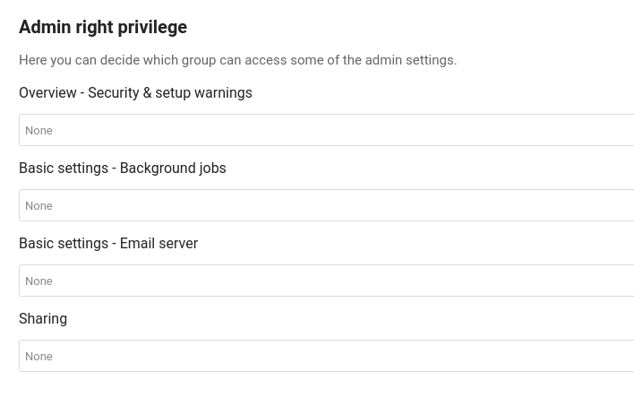

Admin right priviledge
By default only members of the admin group can access and edit the admin settings. It is sometimes needed to give some group of users access to a setting page while not giving them access to everything. For this you can use the Admin right priviledge settings.
Note
Not every setting pages support this features. This is due to either the feature not being implemented yet for the specific setting page or due to possible priviledge escalations.
Configuring Admin right priviledge
Go to the Admin right priviledge Admin page, you should be presented with the list of settings that support this features.

By clicking on the combobox, you will be able to choose which user groups are able to access the selected setting. You can revoke the access at any time by removing the group from the selection.